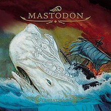

-
In the Court of the Crimson King
- King Crimson
- Label: Island
- Release Year: 1969
- Wiki Entry: Link
- Dave's Thoughts: Atmospheric and dark.
- Standout Tracks:
"21st Century Schizoid Man"
"In the Court of the Crimson King"
-
Leviathan
- Mastodon- 
- Label: Relapse
- Release Year: 2004
- Wiki Entry: Link
- Dave's Thoughts: Introduction to sludge metal. The most brutal yet catchy riffs ever recorded.
- Standout Tracks:
"Blood and Thunder"
"Iron Tusk"